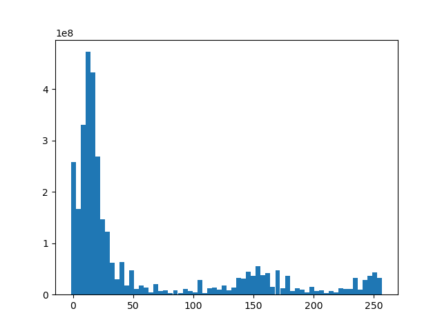
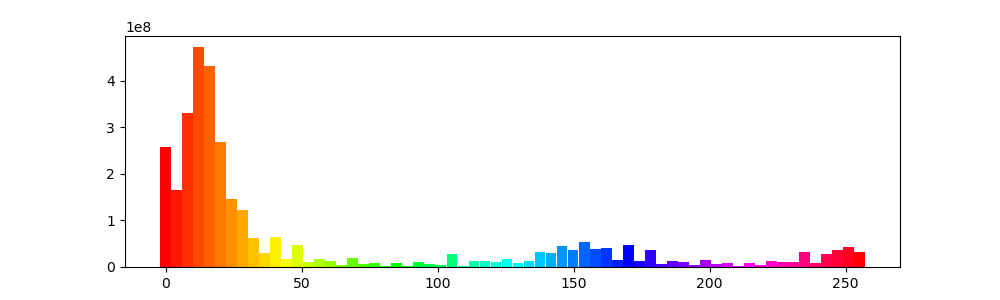

To begin with, we will warm by just making some simple job scripts. For all exercises in this section, your job scripts must submit to the `hpc' queue, use 1 core on 1 node and specify a job name, output file and error file.
Autolab Make a job script that creates a job array with job indices running from 1 to 10.
Answer: Autolab exercise - answer omitted
Autolab Make a job script that creates a job array with job indices 2, 29, 71, 73 and 127.
Answer: Autolab exercise - answer omitted
Autolab Make a job script that waits until another job with id 1234567 exits successfully.
Answer:
Assume we have the following output from bstat for a job array which is already submitted:
$ bstat
JOBID USER QUEUE JOB_NAME NALLOC STAT START_TIME ELAPSED
21241475 patmjen hpc array[1] 1 RUN Apr 9 13:40 0:00:09
21241475 patmjen hpc array[2] 1 RUN Apr 9 13:40 0:00:09
21241475 patmjen hpc array[3] 1 RUN Apr 9 13:40 0:00:09
21241475 patmjen hpc array[4] 1 RUN Apr 9 13:40 0:00:09
21241475 patmjen hpc array[5] 1 RUN Apr 9 13:40 0:00:09
Make job script that creates a job array, where each job in the array waits for the corresponding job in the already submitted array to finish successfully.
Answer:
#!/bin/bash
#BSUB -J jobname[1-5]
#BSUB -q hpc
#BSUB -W 5
#BSUB -n 1
#BSUB -R "span[hosts=1]"
#BSUB -R "rusage[mem=512MB]"
#BSUB -w "done(array[*])"
#BSUB -o jobname_%J.out
#BSUB -e jobname_%J.err
Autolab Again, assume we have the following output from `bstat' for a job array which is already submitted:
$ bstat
JOBID USER QUEUE JOB_NAME NALLOC STAT START_TIME ELAPSED
21241475 patmjen hpc array[1] 1 RUN Apr 9 13:40 0:00:09
21241475 patmjen hpc array[2] 1 RUN Apr 9 13:40 0:00:09
21241475 patmjen hpc array[3] 1 RUN Apr 9 13:40 0:00:09
21241475 patmjen hpc array[4] 1 RUN Apr 9 13:40 0:00:09
21241475 patmjen hpc array[5] 1 RUN Apr 9 13:40 0:00:09
Make a job script that waits until all elements of the job array have exited for any reason.
Answer: Autolab exercise - answer omitted.
In this exercise we will return to the CelebA dataset of celebrity images as our data source. As a way of summarizing the dataset, we will create a histogram over the colors in the images - more specifically, the hue values. The images are stored in subfolders at: /dtu/projects/02613_2024/data/celeba/images. Each subfolder contains around 1000 images. To speed up the computation, we will process each folder as a separate job (using a job array) and then aggregate the results into a combined histogram as a final job at the end.
Consider the following function, which extracts a histogram from an RGB stored as a (H, W, 3) NumPy array:
import numpy as np
from PIL import Image
def huehist(image):
bins = np.linspace(0, 255, 64 + 1)
hsv_image = np.asarray(Image.fromarray(image).convert('HSV'))
hue_values = hsv_image[:, :, 0].reshape(-1)
hue_hist = np.histogram(hue_values, bins)[0]
return hue_hist
Create a Python program which takes an index as a command line argument. For the th folder in /dtu/projects/02613_2024/data/celeba/images, the program must then:
glob.glob or os.listdir to get the files in a folder.subhist_<i>.npy, where <i> is replaced with the value of the provided index .Answer:
import os
from os.path import join
import sys
import numpy as np
from PIL import Image
def huehist(image):
bins = np.linspace(0, 255, 64 + 1)
hsv_image = np.asarray(Image.fromarray(image).convert('HSV'))
hue_values = hsv_image[:, :, 0].reshape(-1)
hue_hist = np.histogram(hue_values, bins)[0]
return hue_hist
if __name__ == '__main__':
idx = int(sys.argv[1]) - 1 # Job arrays must be 1-indexed
base_path = '/dtu/projects/02613_2024/data/celeba/images'
folders = sorted(os.listdir(base_path))
images = sorted(os.listdir(join(base_path, folders[idx])))
hist = 0
for im in images:
image = Image.open(join(base_path, folders[idx], im))
image = np.array(image)
hist += huehist(image)
np.save(f"subhist_{idx}.npy", hist)
Create a Python program that loads the saved histogram arrays, sums them to a combined histogram for the entire dataset, plots the histogram using plt.bar and finally saves the histogram plot as an image.
Answer:
from glob import glob
import numpy as np
import matplotlib.pyplot as plt
if __name__ == '__main__':
histfiles = glob('subhist_*.npy')
hist = 0
for hf in histfiles:
hist += np.load(hf)
plt.bar(np.linspace(0, 255, 64), hist, width=4)
plt.savefig('histogram.png')
Make a job script that submits a job array where each job computes the hue histogram for the th folder using the first Python program.
Answer:
#!/bin/bash
#BSUB -J subhist[1-203]
#BSUB -q hpc
#BSUB -W 15
#BSUB -n 1
#BSUB -R "span[hosts=1]"
#BSUB -R "rusage[mem=512MB]"
#BSUB -o batch_output/subhist_%I_%J.out
#BSUB -e batch_output/subhist_%I_%J.err
source /dtu/projects/02613_2024/conda/conda_init.sh
conda activate 02613
python huedir.py $LSB_JOBINDEX
Make a job script that waits for all jobs in the previous job array to finish successfully and then runs the second Python program to compute and plot the final hue histogram.
Answer:
#!/bin/bash
#BSUB -J plothist
#BSUB -q hpc
#BSUB -W 5
#BSUB -n 1
#BSUB -w done(subhist)
#BSUB -R "span[hosts=1]"
#BSUB -R "rusage[mem=512MB]"
#BSUB -o batch_output/plothist_%J.out
#BSUB -e batch_output/plothist_%J.err
source /dtu/projects/02613_2024/conda/conda_init.sh
conda activate 02613
python plothuehist.py
Submit your jobs and compute the histogram.
Answer: Submitting the jobs, you should see the subhist jobs running and the plothist job remain pending until all the subhist jobs are done. This should give the following histogram:

Making the plotting code a bit more fancy, we can show the hue as part of the histogram:

The most used colors are the red hues, which makes sense since skin colors are from red and orange hues.
The plotting code for the fancy histogram is:
def plothuehist(h, bins=None, ax=None):
if bins is None:
bins = np.linspace(0, 255, 64)
if ax is None:
ax = plt.gca()
patches = ax.bar(bins, h, width=4).patches
h = bins / 255
s = np.ones_like(h)
v = np.ones_like(h)
hsv = (np.stack([h, s, v], axis=-1) * 255).astype(np.uint8)
rgb = np.asarray(Image.fromarray(hsv[None], mode='HSV').convert('RGB'))
rgb = rgb.squeeze() / 255.0
for i, patch in enumerate(patches):
patch.set_facecolor(rgb[i])